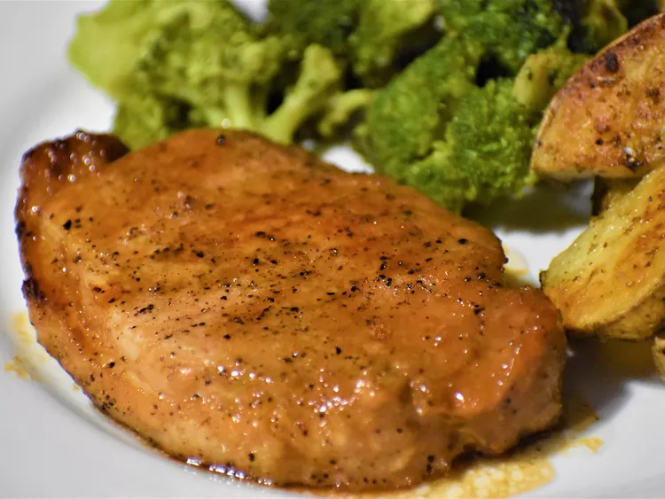

Pork Chops

Home
Desciption
When you're in need of a quick and easy dinner that the whole family will love, look no further than pork chops.
This 5-star grilled pork chop recipe has reviewers' mouths watering thanks to the spectacular honey-garlic glaze — but the 30-minute fridge-to-table time is also a perk too.
Ingredients
- ½ cup ketchup
- 2 ⅔ tablespoons honey
- 2 tablespoons low-sodium soy sauce
- 2 cloves garlic, crushed
- 6 (4 ounce) (1-inch thick) pork chops
Steps
- Preheat grill for medium heat and lightly oil the grate. Gather ingredients.
- Whisk ketchup, honey, soy sauce, and garlic together in a bowl to make a glaze.
- Sear the pork chops on both sides on the preheated grill. Lightly brush glaze onto each side of the chops as they cook.
- Serve hot and enjoy!